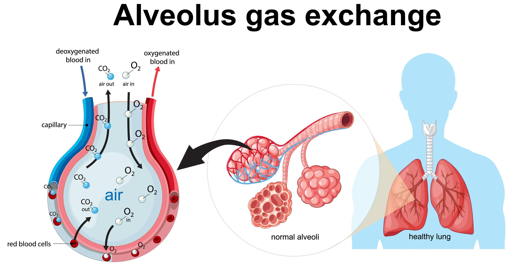
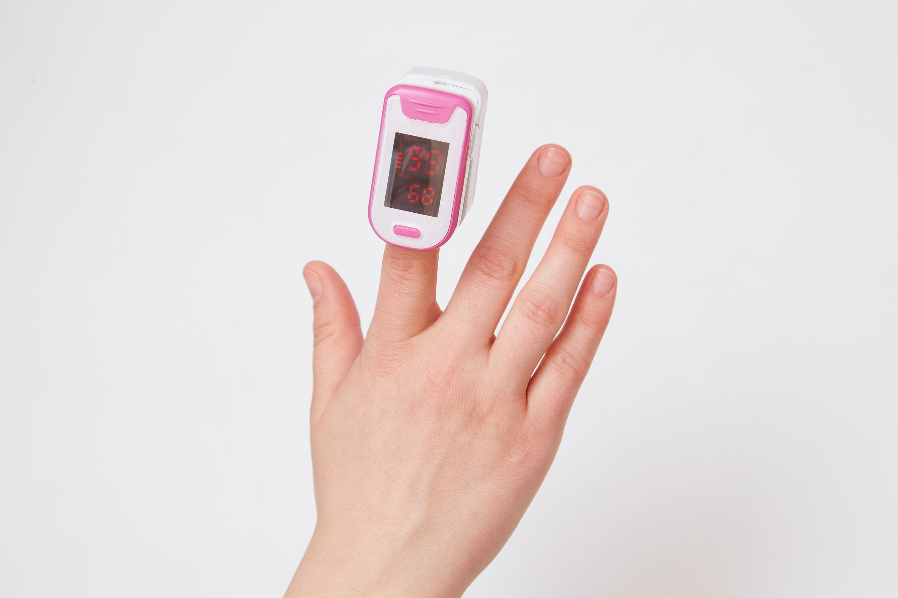

A. Definition (What it is, why it exists, why it matters clinically)
Oxygenation
Oxygenation is the process by which oxygen (O₂) is:
- Ventilated (moved in and out of the lungs),
- Diffused (moves across the alveolar-capillary membrane),
- Transported (carried by hemoglobin in red blood cells),
- Delivered to tissues for cellular respiration (cells using oxygen to produce energy).

👉 Why it exists:
Cells require oxygen to produce adenosine triphosphate (ATP) (energy molecule necessary for life). Without oxygen, cells shift to anaerobic metabolism (energy production without oxygen), leading to lactic acid buildup, cell injury, and death.
👉 Why it matters clinically:
Impaired oxygenation can cause:
- Hypoxemia (low oxygen level in the blood)
- Hypoxia (inadequate oxygen at the tissue level)
- Respiratory failure (inability to maintain oxygenation or ventilation)
- Cardiac arrest
- Organ failure
B. Purpose / Importance (Why nurses prioritize oxygenation)
Nurses prioritize oxygenation to:
- Maintain patent airway (open airway)
- Ensure adequate gas exchange (oxygen in, carbon dioxide out)
- Prevent respiratory distress (difficulty breathing)
- Prevent cardiac compromise (heart dysfunction due to low oxygen)
- Support neurologic function (brain tissue is highly oxygen-dependent)
- Reduce mortality in acute illness (pneumonia, sepsis, trauma, stroke)
If oxygenation is compromised, all other problems are secondary.
C. Normal Oxygenation Values (NCLEX MUST-KNOW)
Respiratory Rate (Adults)
Oxygen Saturation (SpO₂)
SpO₂ (peripheral capillary oxygen saturation) = percentage of hemoglobin saturated with oxygen.
- Normal: 95–100%
- Concerning: < 92%
- Critical: < 90% (hypoxemia)

Arterial Blood Gas (ABG) Basics
- PaO₂ (partial pressure of oxygen in arterial blood): 80–100 mmHg
- PaCO₂ (partial pressure of carbon dioxide): 35–45 mmHg
- pH: 7.35–7.45
A "normal" respiratory rate does NOT guarantee adequate oxygenation.
D. Step-by-Step Breakdown (Assessment → Intervention → Evaluation)
1. Assessment of Oxygenation (ALWAYS FIRST)
Subjective Assessment
Ask about:
- Dyspnea (shortness of breath)
- Orthopnea (difficulty breathing when lying flat)
- Chest tightness
- Fatigue
- Anxiety (early sign of hypoxia)
Objective Assessment
Observe:
- Respiratory rate
- Depth of breathing
- Use of accessory muscles (neck/shoulder muscles used to breathe)
- Nasal flaring (widening of nostrils during breathing)
- Tripod position (leaning forward to ease breathing)
- Cyanosis (bluish discoloration of lips or nail beds)
Auscultate lung sounds:
- Crackles (rales) (fluid in alveoli)
- Wheezes (airflow obstruction)
- Diminished breath sounds (poor air movement)
- Absent sounds (emergency)
Check:
- Pulse oximetry
- Level of consciousness (restlessness → confusion → lethargy)
2. Interventions: Oxygen Therapy (Least Invasive FIRST)
Low-Flow Oxygen Devices
| Device | Flow Rate | Approx. FiO₂ | Use |
|---|---|---|---|
| Nasal cannula | 1–6 L/min | 24–44% | Mild hypoxia |
| Simple face mask | 5–10 L/min | 40–60% | Moderate hypoxia |
Simple mask must be ≥ 5 L/min to prevent carbon dioxide rebreathing.
High-Flow Oxygen Devices
| Device | Flow Rate | FiO₂ | Use |
|---|---|---|---|
| Venturi mask | Precise | Exact % | COPD patients |
| Non-rebreather mask | 10–15 L/min | Up to ~95% | Severe hypoxia, emergencies |

3. Positioning for Oxygenation
- High Fowler's position (upright at 90°) maximizes lung expansion
- Tripod position reduces work of breathing
- Avoid supine position if dyspneic
4. Airway Maintenance
Maintain airway by:
- Suctioning secretions (only when indicated)
- Encouraging cough and deep breathing
- Using incentive spirometry (device encouraging deep breaths to prevent atelectasis)
E. Nursing Priorities (NCLEX loves this)
- Airway patency
- Obstruction = immediate threat to life
- Adequate oxygen delivery
- SpO₂ ≥ 92% unless otherwise ordered
- Early recognition of hypoxia
- Mental status changes come first
- Appropriate oxygen device
- Match severity
- Prevent complications
- Oxygen toxicity, CO₂ retention
Treat hypoxia BEFORE diagnosing the cause.
F. Safety & Infection Control
Oxygen Safety
- No smoking
- No petroleum-based products
- Secure tanks upright
COPD Precaution
COPD (chronic obstructive pulmonary disease) patients rely on hypoxic drive (low oxygen level triggers breathing).
- Typical target SpO₂: 88–92%
- Use Venturi mask for precise control
Do NOT withhold oxygen from a hypoxic COPD patient.
G. Special Populations
Older Adults
- Decreased lung elasticity
- Weaker cough
- Higher aspiration risk
Pediatrics
- Smaller airways → rapid obstruction
- Nasal flaring and retractions are key signs
Post-Operative Patients
- High risk for atelectasis
- Incentive spirometry every 1–2 hours
Chronic Illness
- Heart failure → pulmonary edema
- Neurologic disease → weak respiratory drive
H. NCLEX Traps & Common Mistakes
- Waiting for ABGs before giving oxygen
- Ignoring mental status changes
- Laying patient flat with dyspnea
- Turning off oxygen for meals in unstable patients
- Not humidifying oxygen when needed
- Assuming normal SpO₂ means adequate perfusion
I. Delegation (RN vs LPN vs UAP)
UAP (Unlicensed Assistive Personnel)
- Apply nasal cannula
- Monitor SpO₂
- Report abnormalities
LPN (Licensed Practical Nurse)
- Administer oxygen
- Reinforce breathing exercises
- Monitor response
RN (Registered Nurse)
- Assess respiratory status
- Choose oxygen device
- Interpret ABGs
- Titrate oxygen
- Manage deterioration
J. NCLEX Quick Memory Section
Key Numbers
Hypoxia risk: < 92%
Severe: < 90%
Red Flags
- Restlessness
- Confusion
- Cyanosis
- Accessory muscle use
- Silent chest
NCLEX One-Liner
Armenian College of Nursing & Health Sciences
NCLEX-RN Fundamentals Review